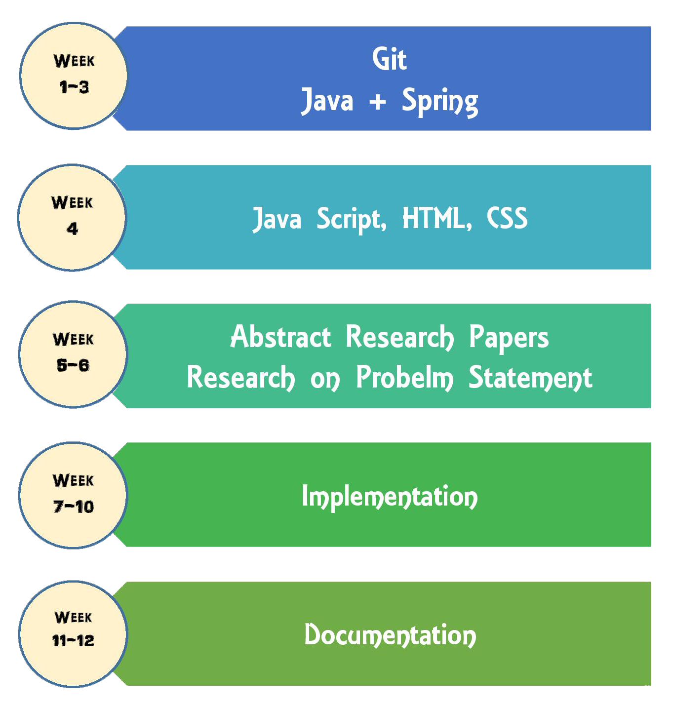

Microblogging today has become a very popular communication tool among Internet users. Millions of users share opinions on different aspects of life everyday in popular websites such as Twitter, Tumblr and Facebook. Twitter’s popularity as an information source has led to the development of applications and research in various domains. Due to the growth of these micro blogging websites, organizations are interested to mine these sites for information to know the opinion of the people about their organization. To help the organizations, in this project, we will collect some of the stats like most influential followers, top 5 tweets, type of engagement, tweet like rate, tweetreach percentage, top 5 sharers, polarity of tweets...etc, based on hashtag or twitter handle provided by the user.
Domains
Bigdata, Data Analysis, Machine Learning
Technologies Needed
- Java (Syllabus)
- JavaScript (Syllabus)
- MySql
- Tomcat
Project Structure
What we provide
- Videos on Required technologies by Ravindrababu Ravula
- Project Implementation Videos by Ravindrababu Ravula
- Presentation Slides
- Assignments with solutions
- 12 weeks of expert guidance
- Assistance to Complete the Documentation